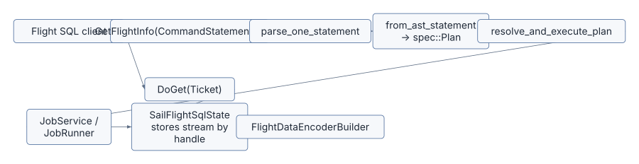

Spark Connect is Sail’s primary front door, but it is not the only one. Sail also exposes Apache Arrow Flight SQL for clients that want SQL over Arrow-native transport rather than PySpark over Spark Connect.
This chapter is deliberately short and concrete. Its job is to place
sail-flight in the definitive architecture: it is a second
protocol surface that converges on the same SQL parser, Sail spec layer,
DataFusion physical planning, JobService, and Arrow
RecordBatch streams.
| Concern | File |
|---|---|
| Flight SQL service | crates/sail-flight/src/service.rs |
| Query handle state | crates/sail-flight/src/state.rs |
| Metrics wrapper | crates/sail-flight/src/metrics.rs |
| SQL parser entry point | crates/sail-sql-analyzer/src/parser.rs |
| SQL AST to spec | crates/sail-sql-analyzer/src/statement.rs |
| Planning entry point | crates/sail-plan/src/lib.rs |
| Job runner extension | crates/sail-common-datafusion/src/session/job.rs |
| Session manager | crates/sail-session/src/session_manager/ |
Spark Connect is Spark-shaped. It carries unresolved Spark relations, commands, expressions, config operations, reattachable execution, artifacts, and session semantics. That is exactly what PySpark needs.
Flight SQL is SQL-shaped. It is useful for ADBC, JDBC-style tools, BI clients, and systems that already understand Arrow Flight. The protocol does not try to model the Spark DataFrame API. It asks a simpler question:
Given this SQL statement, what schema will it produce, and where can I fetch the
Arrow stream?That makes sail-flight an excellent example of Sail’s
internal layering. The protocol is different, but the planning core is
the same.

SailFlightSqlService is small compared with
SparkConnectServer:
pub struct SailFlightSqlService {
session_manager: SessionManager,
config: Arc<PlanConfig>,
metrics: Option<Arc<MetricRegistry>>,
state: Arc<Mutex<SailFlightSqlState>>,
}The service implements FlightSqlService from the
arrow-flight crate. The key methods for query execution
are:
get_flight_info_statementdo_get_statementdo_handshakeOther Flight SQL methods can remain unimplemented until Sail needs them. This is a different compatibility posture than Spark Connect, where PySpark expects a wider service surface.
GetFlightInfoFlight SQL separates planning from fetching. The first request is
GetFlightInfo(CommandStatementQuery). Sail parses the SQL
text, converts it to spec::Plan, creates a physical plan,
starts execution through the session’s JobService, and
stores the resulting stream under an opaque handle.
The key sequence is:
let statement = parse_one_statement(&query.query)?;
let plan = from_ast_statement(statement)?;
let ctx = self.get_session_context().await?;
let (plan, _) = resolve_and_execute_plan(&ctx, self.config.clone(), plan).await?;
let schema = plan.schema();
let service = ctx.extension::<JobService>()?;
let stream = service.runner().execute(&ctx, plan).await?;That is the same core path used elsewhere:
SQL text
-> SQL AST
-> Sail spec
-> DataFusion physical plan
-> JobRunner streamThe service then stores the stream in
SailFlightSqlState:
let handle = QueryHandle::new();
self.state.lock().await.add_stream(handle.clone(), stream);The returned FlightInfo contains the schema and a
TicketStatementQuery carrying that handle.
DoGetThe second request presents the ticket:
let handle = QueryHandle::try_from(ticket.statement_handle.as_ref())?;
let stream = self
.state
.lock()
.await
.remove_stream(&handle)
.ok_or_else(|| Status::not_found(...))?;The handle is consumed once. This keeps server state simple: Flight SQL clients can re-run a query if a fetch fails, while Spark Connect clients use reattachable execution and response buffering.
After retrieving the stream, Sail encodes batches as Flight data:
let output = FlightDataEncoderBuilder::new()
.with_schema(schema)
.build(output)
.map(|result| result.map_err(|e| Status::internal(format!("encoding error: {e}"))));This is where Flight SQL differs from Spark Connect at the wire level. Spark Connect wraps Arrow IPC bytes in Spark protobuf messages. Flight SQL sends Arrow Flight frames directly.
The current Flight SQL service uses a shared default session:
const DEFAULT_SESSION_ID: &'static str = "flight-default";
const DEFAULT_USER_ID: &'static str = "flight-user";That means Flight SQL queries share session configuration and catalog state. It is a reasonable initial model, but a definitive guide should call it out because it is not the same as Spark Connect’s client-provided session IDs.
A future version could carry session identity in Flight headers. The
important architectural point is that the same
SessionManager and SessionContext machinery
still applies.
SQL commands are different from queries because the effect matters more than the result stream. Sail classifies the parsed plan:
let statement_type = match &plan {
spec::Plan::Query(_) => StatementType::Query,
spec::Plan::Command(_) => StatementType::Command,
};For commands, the service drains the stream eagerly in
get_flight_info_statement. That ensures the command has
completed before the client receives FlightInfo.
This detail matters for DDL. A BI client that sends
CREATE TABLE should not have to call DoGet
just to make the side effect happen.
When OpenTelemetry metrics are available, sail-flight
wraps the result stream in MetricsRecordingStream. The
wrapper records row counts, batch counts, elapsed time, and statement
type.
This mirrors a general Sail design habit: protocol crates should add protocol-level metrics around streams without changing the core execution layer.
| Concern | Spark Connect | Flight SQL |
|---|---|---|
| Main client | PySpark | ADBC/JDBC/BI tools |
| Request payload | Spark protobuf plan | SQL statement |
| Result transport | Spark ExecutePlanResponse with
ArrowBatch |
Arrow Flight FlightData |
| Session identity | Client-provided session ID | Shared default session today |
| Retry model | Reattachable operation stream | Re-execute query |
| Planning convergence | spec::Plan |
spec::Plan |
| Execution convergence | JobService / JobRunner |
JobService / JobRunner |
Flight SQL is a useful test for extension design. If a future extension only works when a user enters through Spark Connect protobufs, then SQL clients cannot use it. If it registers through the common spec/resolver/function/table-format layers, both front doors can use it.
For extension authors, this gives a simple rule:
Protocol-specific dispatch is allowed, but semantic registration should happen below
the protocol boundary whenever possible.Flight SQL is not a separate query engine inside Sail. It is another way to reach the same SQL parser, Sail spec IR, DataFusion planning path, and job runner. The protocol differences are real, especially around session identity and fetch handles, but the internal convergence is the point.
Navigation: Previous: Chapter 13, Extension Architecture | Next: Chapter 15, Custom Nodes And Optimizers | Reader Guide